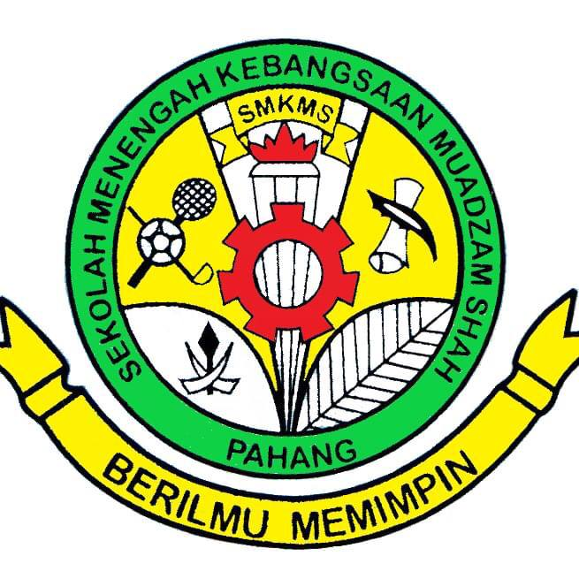
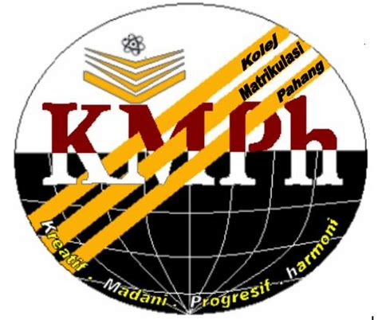
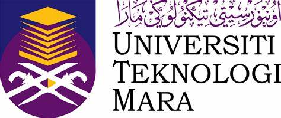

Name: Nurfarhanum Binti Yusoff
Age: 21 Years old
Programme: Bachelor of Business Administration (Hons) Islamic Banking
Faculty: Faculty of Business and Management
Matriks Number: 2020834762
Class: BA2494A
Campus: UITM Kota Bharu

2018
Malaysian Certificate of
Education (SPM)
SMK Muadzam Shah
Rompin, Pahang

2019
Pahang Matriculation College
in Accounting
Kuantan, Pahang

2020-2022
Faculty of Business and Management,
Bachelor of Business Administrtion (Hons)
Islamic Banking (BA294).
University Teknologi Mara (UITM)
Campus Kota Bharu Cawangan Kelantan.